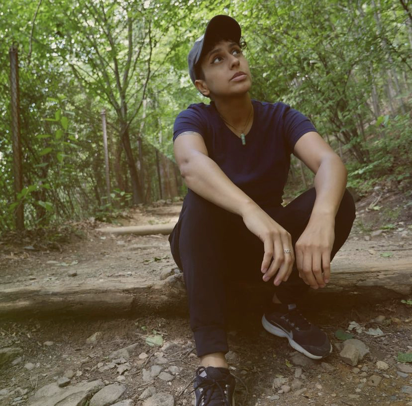

<ion-header>
  <ion-toolbar>
    <ion-back-button slot="start"></ion-back-button>
    

  </ion-toolbar>
</ion-header>

<ion-content>


  <div class="card">
    <div class="header">
      <div class="avatar">
        
      </div>
    </div>
  </div>

  <div class="card-body">
    <div class="user-meta ion-text-center">
      <h3 class="profileName">MelloedMusic</h3>
      <h5 class="profileDescription">The most important thing, number one, is you gotta get rid of doubt. If you got
        doubt in what you're doing, it's not gonna work and the way to do that is you have a plan.

      </h5>
      <ion-chip>
        <ion-label>Dj</ion-label>
      </ion-chip>
      <ion-chip>
        <ion-label>Producer</ion-label>
      </ion-chip>
      <ion-chip>
        <ion-label>Singer</ion-label>
      </ion-chip>
    </div>
    <ion-button expand="block" color="primary" [routerLink] = "['/messages']">Message</ion-button>
    <ion-card *ngFor="let track of files | async" color="dark">
      <ion-card-title class="musicText" id="audioTitle">{{track.audioTitle}}</ion-card-title>
      <ion-item>
        <ion-icon name="play-outline" (click)="togglePlayer(false,track)" *ngIf="!track.isPlaying "></ion-icon>
        <ion-icon name="pause-circle-outline" (click)="togglePlayer(true,track)" *ngIf="track.isPlaying "></ion-icon>
  
        <ion-range max="100" name="{{track.filePath}}" #range [(ngModel)]="track.progress" (touchend)="seek(track)"
          (mouseup)="seek(track)"></ion-range>
      </ion-item>
    </ion-card>
  </div>


</ion-content>